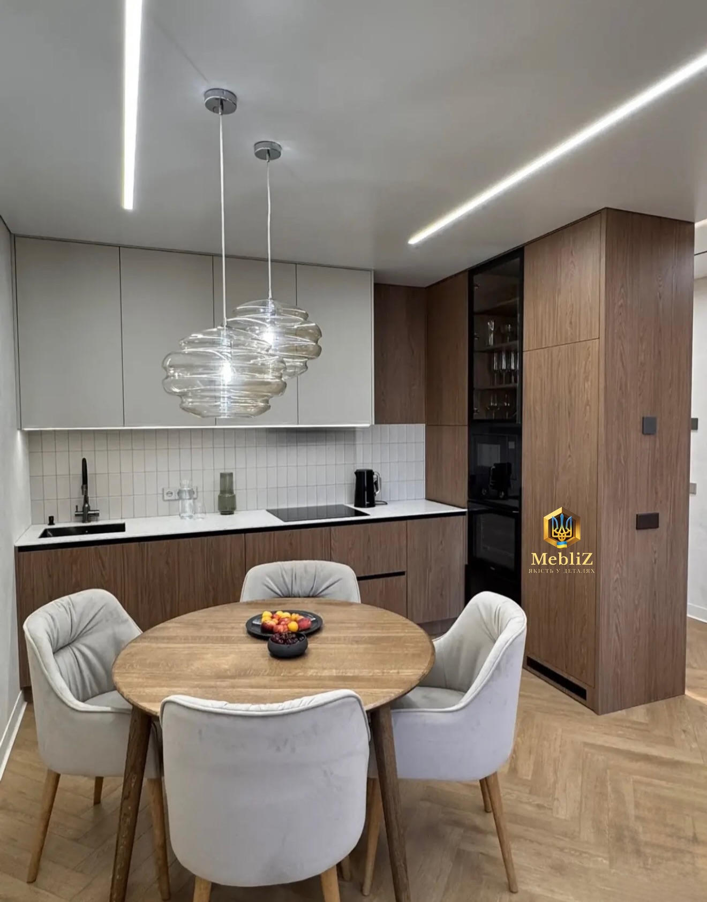

ВЛАСНІ ПРОЄКТИ. РЕАЛЬНІ ІНТЕР’ЄРИ.Дерево. Світло. Баланс.01 / 03
Одеса · Чорноморськ
Ваш простір.
Ваші звички.
Ваші меблі.
Кухні, шафи та меблі для всієї оселі.
Проєктуємо під ваші розміри й виготовляємо
на власному виробництві.
Від першого ескізу
до останньої встановленої ручки.
ПРОЄКТУВАННЯВИГОТОВЛЕННЯМОНТАЖ
Кожному простору —
своє рішення.
Подивіться, що ми вже створили.